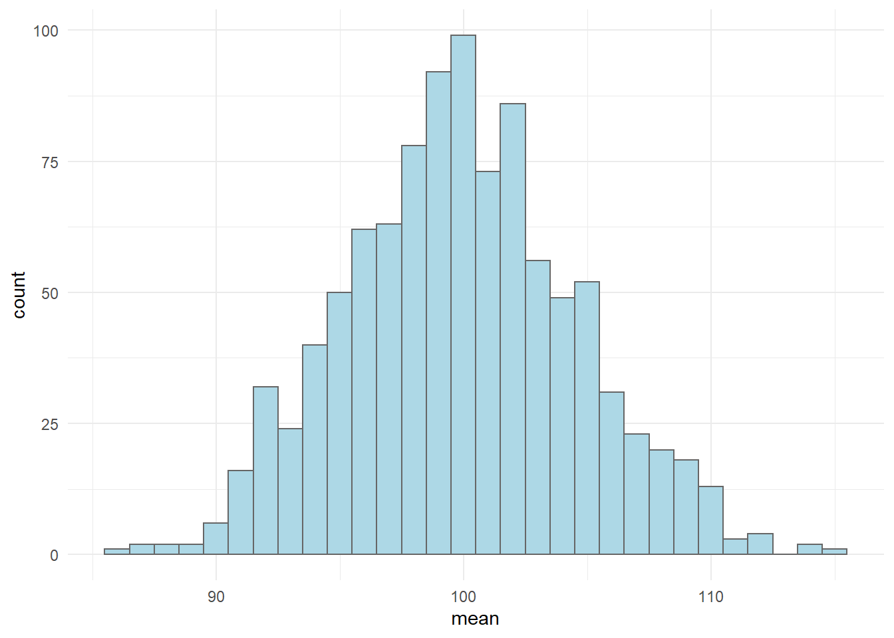

The sampling distribution is in most cases an imaginary distribution containing all the possible values of a sample statistic. The standard deviation of an imaginary sampling distribution can be estimated with the sample standard error. For proportions (\(p\), data bound between 0 and 1), the standard error (\(SE_{\hat{p}}\)) can be calculated as
\[SE_{\hat{p}} = \sqrt{\frac{\hat{p}(1-\hat{p})}{n}}\]
Where \(\hat{p}\) is the estimated proportion. Let’s say that you sample with a sample size (\(n\)) of 30, how will \(\hat{p}\) affect \(SE_{\hat{p}}\)? Have a try in R before you click below.
Here is a possible solutionA confidence interval is calculated based on the standard error of a statistic (such as a proportion or a mean). The standard error of a statistic corresponds to the standard deviation of the sampling distribution. However, to add to the confusion, we never talk about the standard deviation of the sampling distribution, instead we just say standard error. An estimated standard error corresponds to the spread of the sampling distribution.
Let us do an experiment where we create sample distributions. If we have access to the whole population of numbers, we can do this.
In this case the population has an N of 1000000. The population consists with a center at about 100 and a standard deviation of 15. We will examine how the sample size affects the uncertainty of the estimate and how this corresponds to the sampling distribution
First we need to create the population. In R we can easily do this by using the rnorm() function. This function draws number in a semi-random faschion giving us the oportunity to replicate the process. If we tell R to start from the same place, it will return the same numbers. We tell R to start from the same place using the set.seed() function. For reproducability, this function should be set every time you do something involving random processes.
# load packages
library(tidyverse)
# set seed for random number generation
set.seed(123) # this can be any number
pop <- rnorm(n = 1000000, mean = 100, sd = 15)Now let’s say that we want to estimate the mean of the population. We can sample at random from the population using the sample() function.
sample1 <- sample(x = pop, size = 10, replace = FALSE)Setting replace = FALSE makes sure that we do not use the same number twice. We sample from pop and the sample has the size = 10. The mean of the sample is.
mean(sample1)## [1] 96.0118We could continue to sample in this way and record every outcome to build the distribution. A smarter way is to create a for-loop. This is a basic building block in programming, we tell the computer to do a task multiple times and store the results in a nice format. We will sample size = 10 and calculate the mean. The results will be stored in a data frame.
# set the seed
set.seed(123)
# create the data frame
results <- data.frame(mean = rep(NA, 1000))
# The rep function creates a vector full of NA
# each NA can be replaced with a mean
# Second we build the for loop
for(i in 1:1000){
results[i, 1] <- mean(sample(x = pop, size = 10, replace = FALSE))
}The results from this process can be plotted using ggplot2
ggplot(data = results, aes(mean)) +
geom_histogram(fill = "lightblue", color = "gray40", binwidth = 1) +
theme_minimal()
The standard deviation of the sampling distribution can be calculated from the results.
sd(results$mean)## [1] 4.651947The dispersion (spread) of the sampling distribution should correspond to the standard error of the mean in each sample. Let us repeat the sampling and include a calculation of the standard error of the mean. The standard error is calculate as
\[SE = \frac{s}{\sqrt{n}}\]
# set the seed
set.seed(123)
# create the data frame
results <- data.frame(mean = rep(NA, 1000),
sem = rep(NA, 1000))
# The rep function creates a vector full of NA
# each NA can be replaced with a mean
# Second we build the for loop
for(i in 1:1000){
samp <- sample(x = pop, size = 10, replace = FALSE)
results[i, 1] <- mean(samp)
results[i, 2] <- sd(samp) / sqrt(10)
}
sd(results[, 1])## [1] 4.651947The first SE is 5.97, the second is 4.27 the mean SE is 4.61 which is fairly close to the standard deviation of the sampling distribution. Re-write the code above so that the sample size corresponds to 25. Calculate:
IQ values are normally distributed with median 100 (since the distribution is normal, this should be very close the the mean) and standard deviation of 15. Using a sample from the population we can calculate a 95% confidence interval. We will do this with n=10 and n=25. You will have to execute the code. A 95% confidence interval based on the normal distribution can be calculated as
# set the seed
set.seed(1)
n10 <- sample(pop, 10, replace = FALSE)
n25 <- sample(pop, 25, replace = FALSE)
# n = 10
mean_n10 <- mean(n10)
s_n10 <- sd(n10)
error_n10 <- qnorm(0.975) * s_n10/sqrt(10)
# n = 25
mean_n25 <- mean(n25)
s_n25 <- sd(n25)
error_n25 <- qnorm(0.975) * s_n25/sqrt(25)We can collect the pieces and create a plot using this code:
df <- data.frame(sample.size = c(10, 25),
mean = c(mean_n10, mean_n25),
error = c(error_n10, error_n25))
df %>%
ggplot(aes(as.factor(sample.size), mean)) +
geom_errorbar(aes(ymin = mean-error, ymax = mean + error), width = 0.2) +
geom_point(size = 3) +
theme_minimal()What can you say about the effect of sample size on the confidence of an estimate?
Above we used the normal distribution to calculate the confidence interval. It would be more correct to use the t-distribution.
The corresponding code for calculating the error based on the t-distribution would be
qt(0.975, df = n - 1) * s/sqrt(n)
Adopt the code above and graph the different confidence intervals beside each other.
Here is a possible solutionWe know that a random sample will have a mean close to the center of the population distribution (100 in the case above). We want to know if chess players (\(Chess\)) have higher IQ scores than average people \(Average\). We can create an alternative hypothesis stating that
\[H_A: Chess \neq Average\]
The nul hypothesis that we are comparing to is
\[H_0: Chess = Average\]
We collect data from chess players (\(n=24\)). Use the data below to test \(H_0\).
| Chess player | IQ |
|---|---|
| 1 | 129 |
| 2 | 101 |
| 3 | 98 |
| 4 | 89 |
| 5 | 103 |
| 6 | 107 |
| 7 | 123 |
| 8 | 117 |
| 9 | 114 |
| 10 | 109 |
| 11 | 110 |
| 12 | 99 |
| 13 | 101 |
| 14 | 102 |
| 15 | 130 |
| 16 | 121 |
| 17 | 129 |
| 18 | 115 |
| 19 | 107 |
| 20 | 109 |
| 21 | 107 |
| 22 | 96 |
| 23 | 98 |
| 24 | 102 |
Try to calculate the confidence interval and to answer these questions:
We can calculate the mean change from pre- to post-training in the cycling study for \(\dot{V}O2_{max}\). Do this for the whole data set together with the sample SD and mean. How do you interpret the confidence interval?
Here is a possible solutionLet’s say that we are designing a new study. We want to be able to show a difference between pre- to post-training in \(\dot{V}O2_{max}\) of 2% as this might be an important difference. Given the standard deviation that you have calculated above, how many participants should be recruit to the study to be able to detect a difference of 2%?
Here you can try to calculate the lower bound of a 95% confidence limit given a standard deviation equal to what you calculated above and a mean change of interest of 2% using many different alternatives for the sample size.
Here is a possible solutionHow could the above information help you when designing a study? Why is there a relationship between sample size and the lower bound of the confidence interval?
The relevant percentage change for counter-movement jump (cmj.max) is 10% and for wingate peak power (peak.power) 5%. How big samples would you need to have to show such a difference if it was true using a 95% confidence interval?